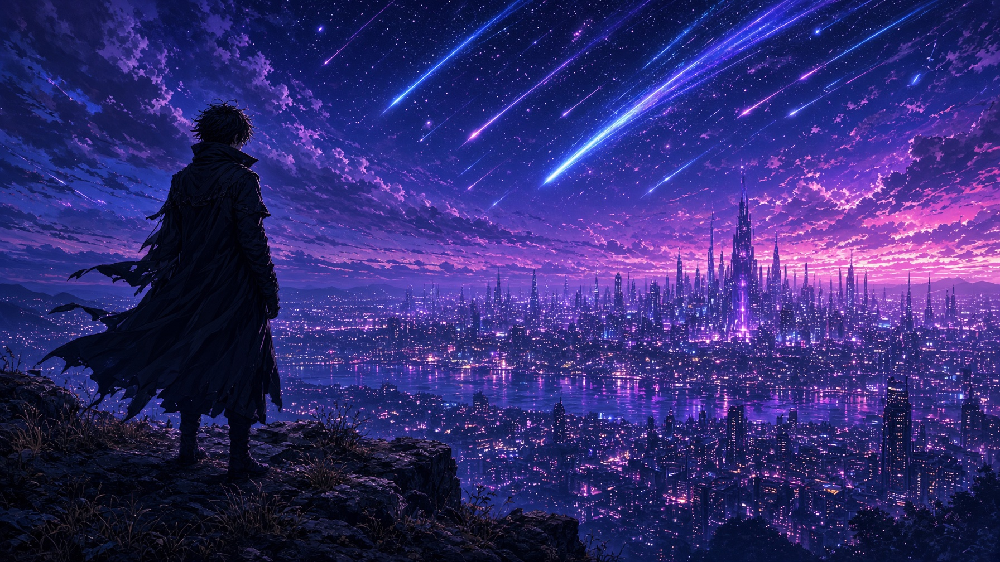
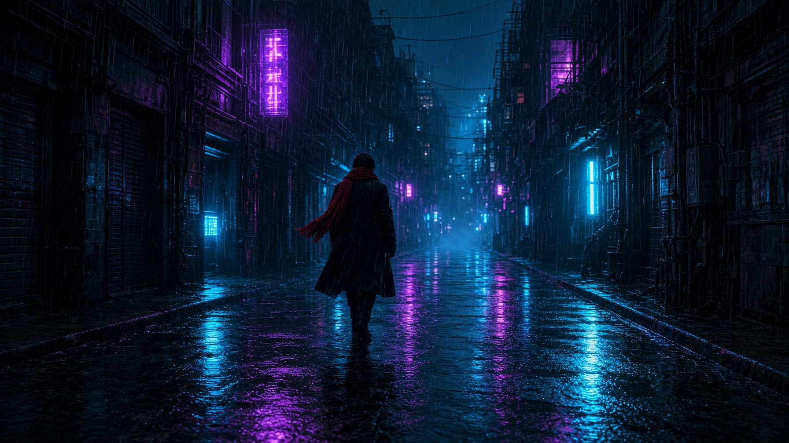
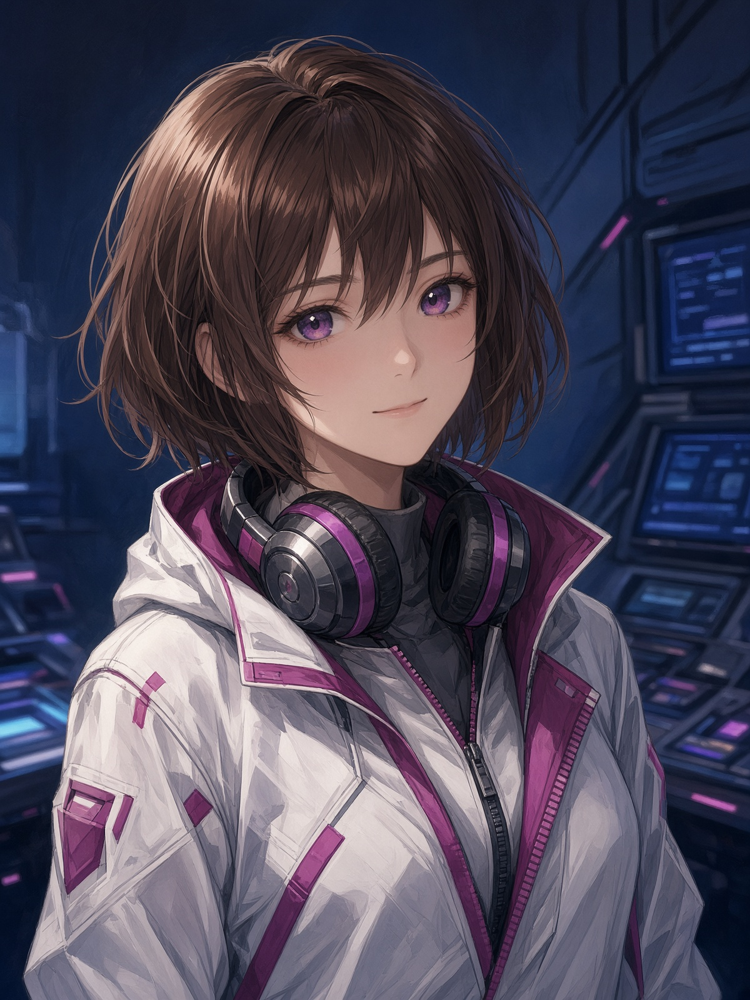

Texto a video
Describe una escena y el estudio la convierte en un clip.
Estudio de video con IA
Escribe una escena, elige el formato y genera. Anime, cine o vertical para redes.

Describe una escena y el estudio la convierte en un clip.
Anima una imagen que ya generaste.
Personajes, escenarios y escenas con estilo anime.
Narra el guion con una voz sintética.
Ordena clips, subtítulos y narración en una línea de tiempo.
Coloca el texto del guion sobre la secuencia.
Lo que generes queda guardado en tu cuenta.
Cada video descuenta créditos en Supabase y se devuelven si falla.


Elige estilo, duración y formato vertical, horizontal o cuadrado.
El estudio llama al modelo. La clave no viaja al navegador.
Ordena los clips, añade la narración y guarda el proyecto.
Esta página es la portada pública. Entrar, generar videos y gastar créditos ocurre en el estudio, no en GitHub.